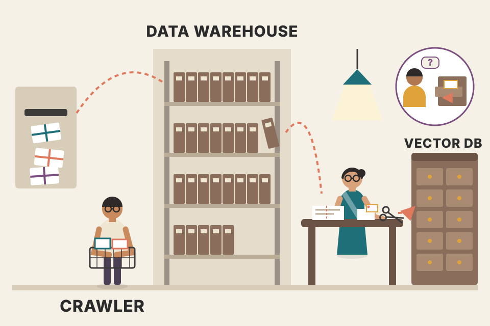
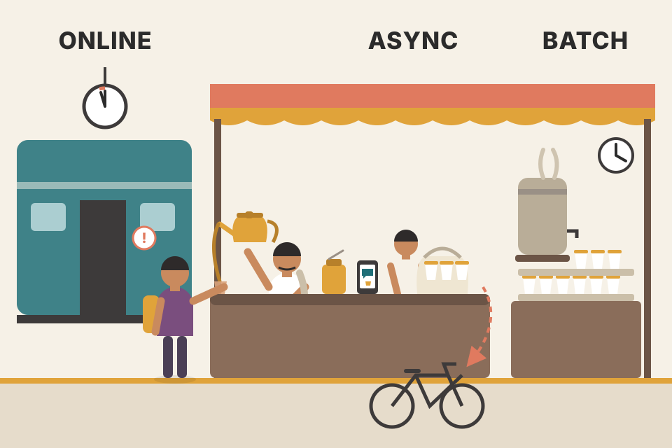

The preface argues that putting an LLM into production is a discipline of its own: it mixes data preparation, fine-tuning, inference optimization and deployment, so it needs software engineering, machine learning and domain knowledge together. It says MLOps (machine learning operations: DevOps habits applied to ML) is what keeps such systems reliable, and that LLMs need it even more because they are so big and complex. The whole book is built around one running project, the LLM Twin: an AI that writes in the style and voice of a particular person, built as a minimum viable product from raw scraped data all the way to a cloud deployment with monitoring. The middle of the preface is a chapter-by-chapter map (11 chapters plus an appendix on six MLOps principles), and the end is practical: what you should already know, where the code lives on GitHub, the typographic conventions, and how to contact the publisher.
A preface is not an argument the way a chapter is, but this one still follows a clear chain. It starts with a problem (LLMs are powerful but hard to run well in production), names the discipline that solves it (LLM engineering, held together by MLOps), gives the teaching device (one end-to-end project, the LLM Twin), and then turns into a map and a manual: who should read it, which chapter does what, what you must know, and how to use the code. Read the rows top to bottom; the orange boxes are ideas the later chapters keep returning to.
This preface has no figures (none are listed for it in figs/MANIFEST.tsv), so every visual on this page is drawn here. pdf p29 is a blank page. The preface has no reference list; the last plate collects the links it mentions.
The book opens by saying that LLM engineering has quickly become an important area inside artificial intelligence (AI) and machine learning (ML). LLMs (large language models) keep changing how computers handle natural language processing (NLP, understanding text) and generation (writing text). As a result, companies need far more people who can actually implement, optimize and deploy these models in real products; the authors describe that demand as growing "exponentially".
What does the job include? The preface lists a spread of disciplines, running from one end of a model's life to the other:
Doing all of that well needs a blend of three kinds of skill: software engineering, machine learning expertise and domain knowledge (knowing the problem area you are building for).
The four steps are the preface's list. Which skill dominates each step is my own reading, to make the "blend" concrete.
Opening a restaurant is not just cooking. You need someone who sources good vegetables (data preparation), a chef who adapts recipes to local taste (fine-tuning), a kitchen layout that gets plates out in ten minutes at lunch rush (inference optimization), and a front-of-house system that takes orders, bills on UPI and never loses a table (deployment). A great home cook alone cannot run it. Where it breaks: a restaurant can hire four people; on a small AI team, one LLM engineer is often expected to do all four.
The reason this became a separate job is that the model is only one part of an LLM product. Calling a model once in a notebook is easy; doing it a million times a day with fresh data, fixed latency, controlled cost and measurable quality is a systems problem. That systems half is ordinary backend and data engineering, and the ML half is about models; LLM engineering is the place where the two meet.
"What does an LLM engineer do that a data scientist doesn't?" A crisp answer: "A data scientist mainly asks whether a model is good. An LLM engineer also owns how the model gets its data, how it is fine-tuned or prompted, how fast and cheap it answers, and how it runs and is monitored in production. In my voice-agent work most of the effort is on the second half: latency, retrieval quality and reliability, not on training models."
The second paragraph introduces MLOps (Machine Learning Operations) and says it plays a crucial role in getting LLMs to work in production. The definition: MLOps extends the principles of DevOps to machine learning projects. DevOps is the set of practices that let software teams build, test and ship code automatically and safely (version control, automated tests, CI/CD pipelines, monitoring). MLOps applies the same thinking to the whole ML lifecycle, with the focus on automating and streamlining it.
Why is it especially important for LLMs? Because of the complexity and scale of these models. The preface names four challenges MLOps addresses:
The payoff, in the book's words, is that LLM projects become more efficient, more reliable and more scalable, which leads to more successful, more impactful deployments.
The scenario is invented to show the four challenges in action; the steps follow a typical ML lifecycle, not a page of the book. Ch.11 and the Appendix give the book's own version.
Indian Railways does not just build trains; it runs them every day. It tracks which coach is attached to which train (versioning), keeps maintenance logs so a repair can be repeated exactly (reproducibility), handles a reservation system with crores of bookings (large data), and watches punctuality every day because a line that ran on time last year can slip (performance over time). MLOps is that operations department for models. Where it breaks: a train does not silently get worse when passengers change their habits; an ML model can, which is why monitoring for "drift" is a special ML concern.
Plain DevOps versions one thing: code. An ML system's behaviour depends on three things: code, data and the trained model (its weights). Change any one and the output changes. That is why MLOps adds data versioning, model registries, experiment tracking and continuous training on top of normal CI/CD. LLMs make every part heavier: datasets are bigger, models are gigabytes, and quality is harder to measure with a single number.
Say a support chatbot was fine-tuned in March on 20,000 tickets. In June, a new product launches and users start asking about it. Without MLOps, someone retrains on a laptop with "the latest data", the new model is copied to the server, and nobody can say which tickets it saw or why it now answers refund questions worse. With MLOps, the June dataset is a named version, the training run is logged with its settings, the new model is compared with the March model on the same test set before release, and if it is worse you redeploy the March version in one step. (Modelled scenario.)
"How is MLOps different from DevOps?" Say: "DevOps versions and tests code. In ML the behaviour also depends on data and model weights, so MLOps versions all three, tracks experiments, adds continuous training, and monitors the model in production for drift, not just for uptime. For LLMs you also monitor prompts and outputs, because quality problems don't show up as errors."
The third paragraph says what the book is: a comprehensive guide to applying best practices in the new field of LLM engineering. Across the chapters you get three kinds of material for every stage of the LLM lifecycle:
The topics it names here are: data engineering, supervised fine-tuning (SFT), model evaluation, inference optimization and RAG (Retrieval-Augmented Generation) pipeline development. RAG means the model first retrieves relevant documents from a store and then generates its answer using them.
To show these ideas working together, the book builds one end-to-end project chapter by chapter: the LLM Twin. Its goal is to imitate a particular person's writing style and personality. The project is meant to demonstrate how to build a minimum viable product (MVP: the smallest version that really solves the problem for real users) for one specific problem, using many parts of LLM engineering and MLOps along the way.
These outputs are written by hand to show the idea (same facts, different voice). They are not outputs of the book's model. How the book gets this effect (scraped writing → RAG + fine-tuning) is Ch.1–6.
The first paragraph on pdf p23 lists the skills the reader can expect to gain. As a checklist:
The chapter pointers in brackets are mine, matched from the chapter list later in the preface.
A ghostwriter for a busy CEO first reads everything the CEO has written (data collection), keeps a folder of the CEO's past posts to look things up (RAG), practises until drafts sound like the CEO (fine-tuning), gets feedback on which drafts the CEO prefers (preference alignment), and then has to deliver on deadline every week (deployment and operations). The LLM Twin is that ghostwriter as software. Where it breaks: a human ghostwriter understands the CEO's intentions; the twin only copies patterns in the text it was given, so it is only as good and as current as its data.
Why build one project instead of many small demos? Because the hard parts of LLM engineering live in the joins: the data format the scraper writes must suit the RAG pipeline, the fine-tuning dataset must match the prompt format used at inference, and the deployed service must log what monitoring needs. Toy demos hide those joins; one end-to-end MVP forces you to solve them. Building it as an MVP also keeps the scope small enough to finish.
"Walk me through an LLM project end to end." The LLM Twin gives a ready template: "Data collection from real sources into a warehouse; a feature pipeline that cleans, chunks and embeds documents into a vector store; a training pipeline that fine-tunes and aligns a small open model; evaluation; an inference service that does retrieval plus generation behind a REST API; and MLOps around it: orchestration, CI/CD, and prompt monitoring." Map each step to a system you have built, for example the RAG memory in a voice agent.
The book is aimed broadly at technology professionals and enthusiasts who care about the practical side of LLMs. Within that, it names two groups:
The first two match the book's two audiences. The third is my addition (a common profile today), and the advice for it is my own reading of the chapter list.
Think of a bridge course at an engineering college. Diploma holders (software engineers) already know the workshop and need the theory; B.Sc. graduates (ML people) know the theory and need the workshop. One course, two directions of travel. Where it breaks: a bridge course ends with an exam; here the "exam" is a working system, and the gaps you need to fill depend on which side you came from.
The emphasis on an open-source LLM matters. With a hosted API you never touch data for training, fine-tuning, quantization or GPU serving; the vendor does it. Choosing an open model (later, Llama 3.1 8B) forces the book to cover the whole stack, which is exactly what both audiences are missing.
"Why are you, a backend engineer, a fit for an AI engineer role?" A clean answer: "Most of what makes LLM products work in production is backend work: data pipelines, APIs, latency budgets, caching, observability and deployment. I already do that daily, around LLM agents and retrieval. What I've added is the ML side: how retrieval quality, fine-tuning and evaluation work, so I can make the trade-offs, not just wire the calls."
The section "What this book covers" gives one short paragraph per chapter. Read together, they follow the life of the LLM Twin in the same order you would build it in a real company: first decide the architecture and install the tools, then get data, turn it into features for retrieval, train and align the model, evaluate it, make it fast, wire up retrieval at query time, deploy it, and finally operate it with MLOps. The next three plates explain each chapter's paragraph; this plate is the clickable overview.
The four stage groups are my grouping; the content of each caption paraphrases the preface's paragraph for that chapter.
| Ch. | Problem it solves | What gets built for the LLM Twin | Named tools / methods |
|---|---|---|---|
| 1 | How should an ML system be structured so it scales? | The LLM Twin idea and its architecture | FTI architecture |
| 2 | What do you need installed before you start? | Local dev setup for all later chapters | Python, orchestrator, experiment tracker, prompt monitoring, LLM evaluation tool, cloud tools |
| 3 | Where does the training/lookup data come from? | Scraping pipeline into a data warehouse | Medium, GitHub, Substack crawlers |
| 4 | How do you make the data searchable for the LLM? | RAG feature pipeline | embeddings, vanilla RAG, vector databases |
| 5 | How do you teach a model a task or a voice? | Fine-tuned Llama 3.1 8B on a custom dataset | instruction-answer pairs, full fine-tuning, LoRA, QLoRA |
| 6 | How do you make answers match what people prefer? | Aligned TwinLlama-3.1-8B | DPO, preference datasets, Unsloth |
| 7 | How do you know if it's any good? | Multi-criteria evaluation of TwinLlama-3.1-8B | general-purpose & domain-specific evals, benchmarks |
| 8 | How do you make it fast and small? | Optimization choices for serving | speculative decoding, model parallelism, weight quantization, inference engines |
| 9 | How do you retrieve well at question time? | RAG inference pipeline + custom retrieval module | self-query, reranking, filtered vector search, (compared with) LangChain |
| 10 | How do you put it behind an API? | Model on SageMaker + REST microservice | online / asynchronous / batch inference, AWS SageMaker, FastAPI |
| 11 | How do you run and change it safely? | Cloud pipelines, containers, CI/CD/CT, prompt monitoring | DevOps → MLOps → LLMOps, AWS, Docker |
| A | What rules make ML systems hold up? | (principles, no new build) | six MLOps principles |
Building a house in order: architect's drawing (Ch.1), tools and permits (Ch.2), buying material (Ch.3), sorting it into labelled stores so you can find it fast (Ch.4), training the workers (Ch.5–6), the inspector's checks (Ch.7), making the workflow efficient (Ch.8), fetching the right material at the moment it's needed (Ch.9), handing the keys to residents (Ch.10), and the housing society's maintenance committee (Ch.11). Where it breaks: a house is finished once; an LLM system goes round the loop again whenever data or needs change, which is what Ch.11's "CT" (continuous training) is about.
Notice that RAG appears twice (Ch.4 and Ch.9). That is not repetition: it is split along the line between work done ahead of time (the feature pipeline: clean, chunk, embed, store) and work done per request (the inference pipeline: turn the query into a search, retrieve, rerank, build the prompt). The same split between offline and online work shows up in Ch.1's architecture and in Ch.10's deployment choices.
"Design an LLM application for X." Interviewers want to hear the lifecycle, not just "call GPT". Walk the book's order: data sources and ingestion, the offline feature/indexing pipeline, the model choice (API vs fine-tuned open model), evaluation, inference optimization, the online retrieval and generation path, deployment mode (online, async or batch), and monitoring. Saying "offline indexing vs online retrieval" out loud already signals experience.
The boxes come from the preface's chapter descriptions. The "clean · chunk · embed" steps are previewed from Ch.4 itself; see that page for the details.

Think of a newspaper archive. Reporters' stories arrive every day from many bureaus (Medium, GitHub, Substack). A clerk collects them (crawler) and files the originals in the back room (data warehouse). A librarian then cuts the stories into clippings, writes an index card for each one by topic (embedding), and puts the cards in a fast lookup cabinet (vector database). Where it breaks: the librarian indexes by keywords she chose; embeddings index by meaning learned from data, so "cheap flight" can find a clipping that only says "low-cost airfare".
The "dynamic sources over static datasets" point is about freshness and realism. A twin of a writer must keep up with what that person writes next month; a frozen dataset can't. And real production data is messy (HTML, code blocks, duplicates), so learning to clean it is part of the job. That is also why data lands in a warehouse first as raw data: you can always re-run the feature pipeline with better cleaning without scraping again.
Say the person has written 120 Medium articles (~1,500 words each), 40 Substack posts and 30 GitHub repos with READMEs. The crawlers pull ~190 raw documents into the warehouse. If the feature pipeline cuts text into ~200-word chunks, the articles alone give about 120 × 1,500 / 200 = 900 chunks, each with one embedding in the vector database. Next month the person publishes 5 more articles: only those 5 are crawled and ~38 new chunks embedded; nothing else is redone. All numbers are invented to show the flow.
"How would you build the ingestion side of a RAG system?" Answer: "Crawl or sync the sources into a raw store first, so reprocessing never needs a re-crawl. Then a separate feature pipeline cleans, chunks and embeds into a vector database, triggered on new data. Keeping raw and processed data apart is what lets you change the chunking or the embedding model later." This is exactly how a RAG memory for an agent should be fed.
A few terms, in one line each, so the chapter list makes sense now (the chapters explain them properly):
Modelled, for one square weight matrix of size d × d. Full fine-tuning trains d² numbers; LoRA trains two thin matrices, d × r and r × d, so 2·d·r numbers. Real models have hundreds of such matrices; Ch.5 gives the book's own figures. 4096 is the hidden size of Llama-class 8B models (beyond the book here).
A new hire at a call centre. SFT is the training manual: "customer says this → you say that", hundreds of examples. Preference alignment is the supervisor listening to two of your calls and saying "this one was better" — you learn the taste, not just the script. Evaluation is the quality-audit score on a fixed set of test calls. LoRA is giving the new hire a small cheat-sheet clipped to the existing manual instead of rewriting the whole manual. Where it breaks: a person understands why one call was better; the model only learns to push probability toward the chosen style of answer.
The order SFT → alignment → evaluation is deliberate. SFT teaches the format and content (follow instructions, write like the person). Alignment then fine-tunes which of several acceptable answers the model prefers, which is hard to express as one "right answer" per prompt. Evaluation comes last because you need a finished model to test, and it needs several criteria because a twin can be accurate but sound wrong, or sound right but be inaccurate.
"When would you fine-tune instead of using RAG or prompting?" Say: "Prompting and RAG change what the model knows at answer time; fine-tuning changes how it behaves — style, format, tone, a narrow task. For an LLM Twin you need both: RAG for the person's facts and fine-tuning for their voice. If I fine-tune, I start with LoRA or QLoRA because it's far cheaper and easy to swap, then add DPO if I have pairs of better and worse answers."
The three modes are the ones the preface names for Ch.10. The cases and the reasoning are my own illustration; Ch.10 gives the book's full trade-offs.

A chai stall at a railway station. Online inference: a passenger at the window, train leaving in two minutes — serve now. Asynchronous: an office sends an order on WhatsApp, you deliver in twenty minutes and ping when it's on the way. Batch: the canteen contract — 500 cups prepared at 4 pm every day on a schedule. Inference optimization is a bigger kettle and a faster pour; LLMOps is checking every morning that the milk is fresh and the taste hasn't drifted. Where it breaks: a chai stall knows instantly if a cup tastes bad; an LLM service can give fluent but wrong answers with no error at all, which is why prompt monitoring exists.
Why quantization (Ch.8) matters for an 8B model like the Twin's Llama: 8 billion weights × 2 bytes each (16-bit) ≈ 16 GB just to hold the weights. At 8 bits that is ≈ 8 GB, and at 4 bits ≈ 4 GB, which fits on a much cheaper GPU and leaves room for the KV cache (the memory of past tokens during generation). This simple arithmetic is standard, not from the preface; Ch.8 gives the book's own treatment and trade-offs (lower precision can cost some quality).
These chapters are about the online path, where every millisecond and every rupee per request counts. Ch.8 makes each model call cheaper; Ch.9 makes the context the model sees better; Ch.10 decides when and how calls happen; Ch.11 makes the whole thing changeable without breaking it. The Twin keeps the model on SageMaker and the RAG logic in a separate FastAPI service, so each part can scale and be updated on its own.
"How would you reduce latency of an LLM feature?" Layer the answer like the book: "First the model call: quantization, a good inference engine, maybe speculative decoding. Then the pipeline: fewer retrieval round trips, rerank only the top results, filter by metadata early. Then the system: pick online vs async vs batch per use case, stream tokens for interactive paths. And monitor prompts and latency in production so regressions show up." For realtime voice this is the whole job.
The authors expect, at the very least, a foundational understanding of software development principles and practices. On top of that:
| Item | How the book treats it |
|---|---|
| Python programming | Particularly beneficial: almost all examples and snippets are in Python. |
| Machine learning concepts | Helpful but not strictly necessary: the book explains many basic AI and ML ideas itself. |
| Basic data structures and algorithms | You should be comfortable with them. |
| Working with APIs and cloud services | You should have some experience. |
| Version control (Git) | Assumed, because the code examples live in a GitHub repository. |
| Background in AI / LLMs | Not required (the book is designed for newcomers), but it makes the more advanced concepts and techniques easier to grasp. |
The five "need" items restate the preface's expectations in concrete form (my wording). The last two are things the preface says help but are not required.
Joining a cricket academy's advanced batch: you should already hold a bat properly and know the rules (software basics, Python), you should be fit (data structures, algorithms), and you should have played a few matches on real grounds (APIs, cloud). You don't need to have played Ranji Trophy (prior ML/LLM experience). Where it breaks: in the academy the coach watches you; with a book, nobody notices if you skip the drills, so run the code yourself.
The list leans on APIs, cloud and Git rather than maths because this is a production book: you will run pipelines on cloud resources, call model and database services, and clone a large repository with many modules. Weak ML background is survivable because each chapter explains its theory; weak engineering background is not, because the code is a full multi-service project.
"What's your ML depth?" For a backend-to-AI transition, be specific: "Strong on Python, APIs, cloud and data pipelines; working knowledge of embeddings, RAG, fine-tuning methods like LoRA, and evaluation. I learn the theory where it changes a production decision." That matches exactly what this book assumes and what it adds.
All the book's code is in one GitHub repository: github.com/PacktPublishing/LLM-Engineers-Handbook. The publisher also keeps code bundles for its other books and videos under github.com/PacktPublishing.
Packt provides a separate PDF with colour versions of the book's screenshots and diagrams, at packt.link/gbp/9781836200079. This is useful because the printed book (and some PDFs) show diagrams in greyscale. The number 9781836200079 in the link is the book's ISBN (International Standard Book Number); the same number appears in the free-PDF link in plate 13.
Only the repository URL and the poetry install --without aws command (from plate 11) come from the preface. The surrounding steps are a generic workflow; Ch.2 gives the real setup.
The book is the recipe card; the GitHub repo is the actual kitchen with the ingredients already measured out. The colour-images PDF is the photo of the finished dish, so you can tell whether the grey blob in the diagram is supposed to be the "training" box or the "inference" box. Where it breaks: a repository changes after printing (fixes, dependency bumps), so the code you clone may differ slightly from what is printed.
Shipping code as a repository rather than as snippets in the text is itself an MLOps habit: the project has a real structure (pipelines, configs, dependency files) that you can't reproduce by copying pages. It also means the book's "examples" are versioned and reproducible, which is the point of plate 02.
Take-home assignments for AI roles are often judged on repository hygiene: clear structure, a lockfile, a reproducible install command, config separate from code. Studying how a production-style repo like this one is laid out is good preparation for that.
poetry install example.The book uses a small set of text styles. Knowing them helps you tell, at a glance, whether a word is something to type, something to click, or a new idea.
| Style | Used for | Example from the preface (paraphrased) |
|---|---|---|
| CodeInText | Code words inside a sentence, database table names, folder names, filenames, file extensions, pathnames, dummy URLs, user input and Twitter handles. | A sentence about the format_samples function, which applies the Alpaca chat template to each message. |
| Code block | A multi-line listing, set apart from the text. | The format_samples function (see the rewritten version below). |
| Bold lines in a code block | The lines the authors want you to notice in a listing. | The same function with some lines in bold. |
| Command line | Commands you type in a terminal, and their output. | poetry install --without aws |
| Bold | A new term, an important word, or words you see on screen (menus, dialog boxes). | Steps in GitHub: open a forked repo's Settings tab → left panel Security section → Secrets and Variables → Actions. |
| Warning box | Warnings or important notes. | (shown as a styled box in the book) |
| Tip box | Tips and tricks. | (shown as a styled box in the book) |
The preface uses one real function from the book as its code-block example. It is a small data formatting step from the preference-alignment chapter. Here is the same idea in my own words and names; the bold lines play the role of the "notice these" lines:
END = tokenizer.eos_token # the model's "end of text" marker
def to_preference_row(row):
# wrap the raw question in the instruction template the model was fine-tuned on
row["prompt"] = INSTRUCTION_TEMPLATE.format(row["prompt"])
# mark where each candidate answer stops
row["chosen"] = row["chosen"] + END
row["rejected"] = row["rejected"] + END
return {k: row[k] for k in ("prompt", "chosen", "rejected")}prompt, chosen, rejected): this is the shape of a preference dataset. For one question there is a better answer and a worse one. Ch.6 explains how DPO learns from such pairs.The template text and the </s> marker are simplified stand-ins; the exact template string and EOS token come from the model and Ch.5–6.
poetry install --without aws uses Poetry, a Python dependency and packaging tool. install installs the project's locked dependencies; --without aws skips an optional dependency group named aws, so you can work locally without the cloud libraries. (The book introduces Poetry in Ch.2.)
Road signs: a blue sign tells you something to do (type this command), a white sign with a name tells you where you are (a filename), and a red triangle warns you (warning box). Once you know the colours you read the road without stopping. Where it breaks: road signs are standardised by law; book conventions differ between publishers, so the O'Reilly books in this workspace use a slightly different set.
The difference between bold and code matters most in a hands-on book: bold words are things you click in a user interface (GitHub, AWS console), code words are things you type or that exist in files. The GitHub Settings → Secrets → Actions example is about storing credentials for GitHub Actions, GitHub's built-in CI/CD service, which is where a later CI/CD pipeline would read its keys.
The format_samples idea is a nice small interview talking point: "In preference tuning each row is prompt, chosen, rejected. You apply the same chat template the model was fine-tuned with and append the EOS token so it learns to stop. A template mismatch between training and inference is a classic silent bug: the model works but quality drops." That shows you've touched real fine-tuning data, not just the theory.
The publisher (Packt) welcomes reader feedback and gives four channels:
| You want to… | Where | Note |
|---|---|---|
| General feedback | feedback@packtpub.com | Put the book's title in the subject. Questions about any part of the book go to questions@packtpub.com. |
| Report a mistake (errata) | packtpub.com/submit-errata | They admit mistakes happen despite care; visit the page, click Submit Errata, fill in the form. |
| Report piracy | copyright@packtpub.com | If you find an illegal copy of any of their works online, send the location address or website name, with a link. |
| Become an author | authors.packtpub.com | If you have expertise in a topic and want to write or contribute to a book. |
The last case (repo issues) is not covered by the preface; the suggestion for it is my own.
A railway station has separate counters: enquiry (questions), complaint book (errata), the RPF office (piracy), and the recruitment notice board (becoming an author). Going to the right counter gets you an answer faster. Where it breaks: at a station you can walk between counters; with email, the wrong inbox may simply never reply.
Errata matter more for technical books than for most: one wrong line in a listing can break a whole pipeline. Publishers collect errata so later printings and the online version can be fixed. For a book with a live GitHub repo, many code fixes happen in the repo itself, which is one more reason to work from the repo rather than retype the printed code.
Not a direct interview topic, but the errata idea maps to a common question: "How do users report problems with your AI feature?" Say: "Separate channels by type: quality complaints (thumbs-down, flagged answers) go into the evaluation set, bugs go to the issue tracker, abuse goes to trust and safety. Each channel has an owner, like a publisher's errata form versus its feedback inbox."
After you finish LLM Engineer's Handbook, First Edition, the authors ask you to leave a review on the book's Amazon review page (the printed text says "click here", a link in the e-book). They say reviews matter to them and to the tech community, and help them make sure the content is of high quality.
Every Packt book purchase comes with a DRM-free PDF at no extra cost. DRM (digital rights management) is copy protection that locks a file to one app or device; DRM-free means you can open it on any device. The page lists the benefits: read anywhere on any device, even if your e-book doesn't work on your preferred device; search, copy and paste code from the book straight into your application; plus access to discounts, newsletters and free content by email.
The steps:
The printed list on pdf p28 is numbered 1, 2, 3 but the page layout jumbles the numbers; the content is the three steps above. pdf p29 is blank.
Like buying a train ticket at the counter and also getting the e-ticket on your phone: same journey, but now you can search it, forward it and never lose it. Where it breaks: the e-ticket comes automatically; here you have to send proof of purchase first.
For a code-heavy book the "copy and paste code" benefit is the practical one: retyping long Python listings introduces errors. Still, the better source for runnable code is the GitHub repository (plate 10), because it is maintained after printing.
The preface has no "Summary" section of its own; this is the whole preface in plain words.
| Term | Plain meaning |
|---|---|
| LLM (large language model) | A big neural network trained on text that can understand and generate language. |
| LLM engineering | The work of getting LLMs to run well in real products: data, fine-tuning, speed, deployment. |
| MLOps | Machine learning operations: DevOps practices (automation, versioning, testing, monitoring) applied to data and models too. |
| DevOps | Practices that let teams build, test, release and run software automatically and safely. |
| LLMOps | MLOps specialised for LLM apps (e.g. prompt monitoring). Ch.11. |
| LLM Twin | The book's project: an AI that writes like a specific person. |
| MVP (minimum viable product) | The smallest version of a product that truly solves the problem. |
| FTI architecture | The way Ch.1 structures ML systems (feature, training, inference pipelines). |
| RAG (retrieval-augmented generation) | Fetch relevant documents first, then let the LLM answer using them. |
| Embedding | A vector of numbers representing a text's meaning; similar meanings give close vectors. |
| Vector database | A store built to find the vectors nearest to a query vector quickly. |
| SFT (supervised fine-tuning) | Further training a pre-trained model on instruction-answer pairs. |
| LoRA / QLoRA | Fine-tuning by training small add-on matrices (QLoRA: on a quantized base model). |
| DPO (Direct Preference Optimization) | Aligning a model with preferences using pairs of chosen and rejected answers. |
| Benchmark | A shared test set for comparing models. |
| Speculative decoding | A small model drafts tokens that a large model verifies, to speed up generation. |
| Model parallelism | Splitting one model across several GPUs. |
| Quantization | Storing weights with fewer bits to save memory and time. |
| Self-query / reranking / filtered vector search | Advanced RAG steps: extract filters from the question / re-score results / search with metadata limits. |
| Online / async / batch inference | Answer now / answer later and notify / process many inputs on a schedule. |
| CI/CD/CT | Continuous integration, delivery and training. |
| EOS token | The special token marking the end of a sequence. |
| Alpaca template | A fixed instruction/response text layout used to format training examples. |
| Errata | A list of known mistakes in a published book. |
| DRM-free | Without copy protection; opens on any device. |
| Name | What it is | Role in the book |
|---|---|---|
| Medium, GitHub, Substack | Writing and code platforms | Sources the Ch.3 crawlers scrape for the Twin's data. |
| Llama 3.1 8B | An open-weight 8-billion-parameter LLM from Meta | Base model fine-tuned in Ch.5. |
| TwinLlama-3.1-8B | The book's fine-tuned Llama | Aligned in Ch.6, evaluated in Ch.7. |
| Unsloth | A library for fast, memory-efficient fine-tuning | Used for DPO in Ch.6. |
| LangChain | A popular framework for LLM apps and retrieval | Ch.9's custom retrieval module resembles what it offers. |
| AWS SageMaker | Amazon's managed ML training/hosting service | Hosts the fine-tuned model in Ch.10. |
| FastAPI | A Python web framework for APIs | Exposes the RAG inference pipeline as a REST API in Ch.10. |
| AWS | Amazon Web Services cloud | Runs the ML pipelines in Ch.11. |
| Docker | Container tool | Packages the code in Ch.11. |
| Poetry | Python dependency manager | The poetry install --without aws example. |
| Git / GitHub | Version control / code hosting | Holds the book's repo; GitHub Actions secrets example. |
| Packt | The publisher | Colour images, free PDF, errata, feedback. |
The preface names tool categories for Ch.2 (orchestrator, experiment tracker, prompt monitoring, LLM evaluation) but not the products. The Ch.2 page names the specific tools the book picks; check there rather than assuming. Inference engines in Ch.8 likewise are only named in that chapter.
Data preparation, model fine-tuning, inference optimization and production deployment.
Software engineering, machine learning expertise and domain knowledge.
Extending DevOps principles to ML projects to automate and streamline the whole ML lifecycle.
Managing large datasets, handling model versioning, ensuring reproducibility, and maintaining model performance over time.
To imitate a person's writing style and personality. Building it as an MVP shows how to solve one specific problem end to end with the smallest real product, touching every part of LLM engineering and MLOps.
Ch.4 is the feature pipeline (offline: prepare, embed, store). Ch.9 is the inference pipeline (online, per query: self-query, filtered search, reranking, building the prompt).
The model may not learn where an answer should end, so after training it can ramble past the natural stopping point.
prompt, chosen, rejected. Ch.6 (DPO).
Online, asynchronous and batch inference.
Continuous training. Because model quality depends on data, which keeps changing, the model must be retrained and redeployed regularly, not only when code changes.
Not strictly. Assumed: software development fundamentals, Python, basic data structures and algorithms, some API and cloud experience, and Git.
Things to type or that live in files appear as CodeInText or command-line blocks; on-screen words (menus, dialog boxes) and new terms appear in bold.
"Collect raw data from live sources into a warehouse, then run a feature pipeline that cleans, chunks and embeds it into a vector database. Fine-tune and align an open model if behaviour or style needs it, and evaluate it on several criteria. Serve it with an optimized inference engine behind an API, with a RAG inference pipeline that retrieves and reranks context per request, choosing online, async or batch per use case. Wrap it in MLOps: orchestration, containers, CI/CD/CT and prompt monitoring."